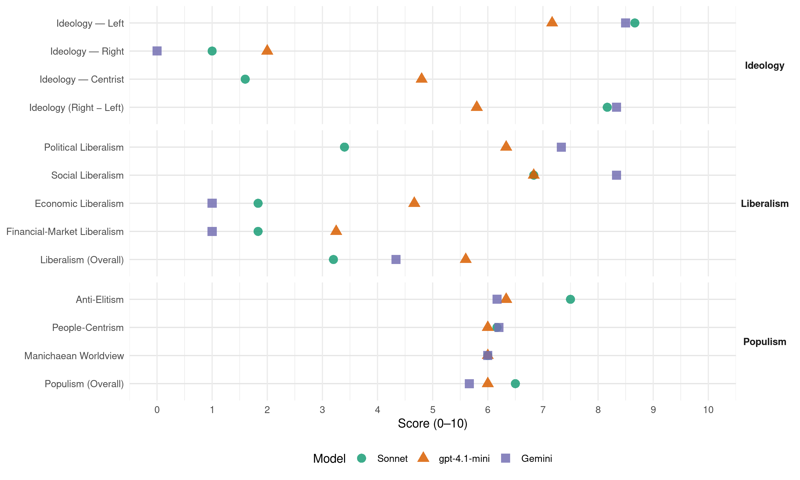

PRC (Italy, 2001)
manifesto_id 32212_200105
Get full text: This site shows derived annotations and short verbatim quotes only. The full manifesto text is © Manifesto Project / WZB — obtain it via manifesto-project.wzb.eu using the manifesto_id above.
Headline scores
| Dimension | Sonnet | gpt-4.1-mini | Gemini |
|---|---|---|---|
| Populism (Overall) | 6.5 | 6.0 | 5.7 |
| Anti-Elitism | 7.5 | 6.3 | 6.2 |
| People-Centrism | 6.2 | 6.0 | 6.2 |
| Manichaean Worldview | 6.0 | 6.0 | 6.0 |
| Ideology (Right − Left) | 8.2 | 5.8 | 8.3 |
| Liberalism (Overall) | 3.2 | 5.6 | 4.3 |
| Political Liberalism | 3.4 | 6.3 | 7.3 |
| Social Liberalism | 6.8 | 6.8 | 8.3 |
| Economic Liberalism | 1.8 | 4.7 | 1.0 |
| Financial-Market Liberalism | 1.8 | 3.2 | 1.0 |
Evidence per dimension
Economic Liberalism
Gemini · score 1.0 · verified · chunk 1
“La logica del mercato e del profitto”
ridurre la vita vegetale, animale e umana a un oggetto in loro proprietà. La logica del mercato e del profitto ha ridotto la scienza e la cultura
Gemini · score 1.0 · verified · chunk 2
“mantenimento della sua fisionomia pubblica”
rimanere sotto il controllo dello Stato. Solo attraverso il mantenimento della sua fisionomia pubblica può essere garantita l’unitarietà
Gemini · score 1.0 · verified · chunk 3
“mantenuta fuori dalle logiche liberiste”
In definitiva l’agricoltura deve essere mantenuta fuori dalle logiche liberiste dell’Organizzazione mondiale del commercio
Gemini · score 1.0 · verified · chunk 4
“svincolata dalle leggi del mercato del lavoro”
Deve essere inoltre svincolata dalle leggi del mercato del lavoro, non soggetta alla precarietà e alle esigenze di profitto
Gemini · score 1.0 · verified · chunk 5
“processo di privatizzazione dei servizi”
Nel corso di questi anni, tra i punti più pesantemente negativi per gli enti locali c’è stato il violento, ideologico, processo di privatizzazione dei servizi, sia a carattere industriale sia a carattere sociale.
Gemini · score 1.0 · verified · chunk 6
“opponiamo a qualunque rilancio dei negoziati volti ad accelerare ulteriormente la liberalizzazione”
Ci opponiamo a qualunque rilancio dei negoziati volti ad accelerare ulteriormente la liberalizzazione del commercio internazionale nell’ambito dell’Omc.
gpt-4.1-mini · score 3.0 · verified · chunk 1
“La logica del mercato e del profitto ha ridotto la scienza e la cultura a strumenti per la loro valorizzazione”
Il processo di globalizzazione capitalistica e le politiche neoliberiste che la guidano hanno allargato e approfondito le differenze sociali e tra i popoli, hanno intensificato lo sfruttamento del lavoro umano, si sono impossessate delle risorse della terra e della natura, vogliono ridurre la vita vegetale, animale e umana a un oggetto in loro proprietà. La logica del mercato e del profitto ha ridotto la scienza e la cultura a strumenti per la loro valorizzazione.
gpt-4.1-mini · score 6.0 · verified · chunk 2
“riduzione della pressione fiscale sul lavoro dipendente”
Un’immediata riduzione della pressione fiscale sul lavoro dipendente, quale misura propedeutica a una riforma fiscale complessiva, tale da portare a un incremento delle retribuzioni reali non inferiore a un milione di lire annuo.
gpt-4.1-mini · score 4.0 · verified · chunk 3
“L’agricoltura deve essere mantenuta fuori dalle logiche liberiste dell’Organizzazione mondiale del commercio”
In definitiva l’agricoltura deve essere mantenuta fuori dalle logiche liberiste dell’Organizzazione mondiale del commercio (Omc o Wto), per promuovere, al contrario, la sovranità alimentare dei territori.
gpt-4.1-mini · score 7.0 · verified · chunk 4
“abolizione dell’ICI sulla prima casa non di lusso”
la progressiva abolizione dei sostituti d’imposta sulle attività finanziarie, al fine di ripristinare la generalità dell’imposta sul reddito e di estendere la base imponibile soggetta a tassazione progressiva; l’abolizione dell’ICI sulla prima casa non di lusso; una revisione generale delle fonti di finanziamento degli enti locali.
gpt-4.1-mini · score 6.0 · verified · chunk 5
“la privatizzazione dei servizi”
Nel corso di questi anni, tra i punti più pesantemente negativi per gli enti locali c’è stato il violento, ideologico, processo di privatizzazione dei servizi, sia a carattere industriale sia a carattere sociale.
gpt-4.1-mini · score 2.0 · verified · chunk 6
“contro il liberismo, la globalizzazione capitalista”
Per questo siamo parte integrante del movimento contro il liberismo, la globalizzazione capitalista e la guerra che, a partire da Seattle, si è imposto sulla scena mondiale e, a Porto Alegre, ha compiuto un salto di qualità nella definizione delle politiche alternative da perseguire.
Sonnet · score 2.0 · verified · chunk 1
“battersi contro il neoliberismo e la privatizzazione”
E’ necessario e possibile battersi contro il neoliberismo e la privatizzazione contrapponendo ad essi una difesa e una riforma del modello europeo di stato sociale.
Sonnet · score 2.0 · verified · chunk 2
“privatizzazione di ogni spazio pubblico e di deregolamentazione”
perseguire una linea nettamente diversa dalle scelte compiute in questi anni, di privatizzazione di ogni spazio pubblico e di deregolamentazione di ogni settore
Sonnet · score 2.0 · verified · chunk 3
“fuori dalle logiche liberiste dell’Organizzazione mondiale del commercio”
l’agricoltura deve essere mantenuta fuori dalle logiche liberiste dell’Organizzazione mondiale del commercio (Omc o Wto), per promuovere, al contrario, la sovranità alimentare dei territori
Sonnet · score 2.0 · verified · chunk 4
“logiche di privatizzazione”
Più in generale si tratta di garantire il diritto ad un effettiva fruizione di massa degli eventi sportivi contro le logiche di privatizzazione
Sonnet · score 2.0 · verified · chunk 5
“processo di privatizzazione dei servizi”
tra i punti più pesantemente negativi per gli enti locali c’è stato il violento, ideologico, processo di privatizzazione dei servizi
Sonnet · score 1.0 · verified · chunk 6
“abbandonare la strada fallimentare del libero scambio”
è opportuno abbandonare la strada fallimentare del libero scambio, ripristinando accordi preferenziali con le aree più povere
Financial-Market Liberalism
Gemini · score 1.0 · verified · chunk 1
“I grandi poteri economici e finanziari”
La logica del mercato e del profitto ha ridotto la scienza e la cultura a strumenti per la loro valorizzazione. I grandi poteri economici e finanziari hanno svuotato
Gemini · score 1.0 · verified · chunk 2
“movimenti di capitale, gli investimenti diretti”
regolano materie come: la deregolamentazione e la privatizzazione nei settori strategici e nei servizi pubblici essenziali, i movimenti di capitale, gli investimenti diretti all’estero
Gemini · score 1.0 · verified · chunk 3
“consegnato al “mercato” ed ai “privati” il primato assoluto nel controllo”
In tal modo, è stato consegnato al “mercato” ed ai “privati” il primato assoluto nel controllo e nella gestione di questo settore così nevralgico
Gemini · score 1.0 · verified · chunk 4
“tassa sulle transazioni finanziarie”
introduzione della cosiddetta Tobin tax, una tassa sulle transazioni finanziarie effettuata in valuta estera.
Gemini · score 1.0 · verified · chunk 5
“tassa sui flussi speculativi di capitale”
Aumento che potrebbe essere efficacemente finanziato, ancora una volta, dall’introduzione di una tassa sui flussi speculativi di capitale (Tobin tax) e dal ritiro dei finanziamenti europei a Fondo Monetario Internazionale e Banca Mondiale
Gemini · score 1.0 · verified · chunk 6
“misure di controllo dei movimenti di capitale”
dall’adozione della Tobin tax, di accordi internazionali sui tassi di cambio e/o di misure di controllo dei movimenti di capitale.
gpt-4.1-mini · score 2.0 · verified · chunk 1
“L’Italia ha conseguito un vero e proprio primato europeo, testimoniato dallo straordinario incremento dell’avanzo primario”
In tema di risanamento finanziario l’Italia ha conseguito un vero e proprio primato europeo, testimoniato dallo straordinario incremento dell’avanzo primario, ovvero della differenza tra entrate fiscali e spesa pubblica al netto degli interessi, passata dal –1,6% del 1990 al +5,2% del 2000, con un picco del +6,7% nel 1997. Una simile, gravosa correzione dei conti pubblici ha permesso, come è noto, l’ingresso immediato dell’Italia nell’Unione monetaria europea, dando luogo inoltre alla svolta verso il basso del rapporto tra debito pubblico e Pil, il cui declino è andato consolidandosi nella seconda metà degli anni 90.
gpt-4.1-mini · score 5.0 · mixed · chunk 2
“privatizzazioni e liberalizzazione”
Dopo i molteplici fallimenti già verificati in altri ambiti (credito, assicurazioni, telecomunicazioni, agroalimentare, infrastrutture), sarebbe del tutto irrazionale ed estremamente grave procedere sulla strada intrapresa di privatizzazione, liberalizzazione e deregolamentazione del settore.
gpt-4.1-mini · score 3.0 · verified · chunk 3
“è fondamentale che si affermi la necessità che le autorità di politica monetaria assumano, come prioritari, obiettivi di sviluppo e pieno impiego”
Qui ci limitiamo ad affermare che, in questo ambito, è fondamentale che si affermi la necessità che le autorità di politica monetaria assumano, come prioritari, obiettivi di sviluppo e pieno impiego (anziché obiettivi antinflazionistici e di cambio) e che operino conseguentemente mediante la riduzione del costo del credito e l’allargamento della base monetaria.
gpt-4.1-mini · score 6.0 · verified · chunk 4
“limitazioni al segreto bancario, per arginare i fenomeni di elusione”
Si dovranno promuovere forti limitazioni al segreto bancario, per arginare i fenomeni di elusione e di evasione in corso e per contrastare lo sviluppo dei cosiddetti “paradisi fiscali”. In ambito italiano, fin dal 1991 (art. 20, Legge 413/91) è stata prevista l’istituzione di un’anagrafe dei rapporti di conto e di deposito.
gpt-4.1-mini · score 2.0 · verified · chunk 6
“Fondo Monetario Internazionale e la Banca Mondiale hanno infatti operato in modo da aggravare la situazione economica”
La disastrosa politica monetaria e finanziaria condotta tramite le istituzioni monetarie internazionali verso i paesi poveri (il cosiddetto “aggiustamento strutturale”). Il Fondo Monetario Internazionale e la Banca Mondiale hanno infatti operato in modo da aggravare la situazione economica dei paesi che, da oltre un ventennio, pagano tassi d’interesse usurai, tuttora determinati in gran parte dalle scelte di politica monetaria degli Stati Uniti.
Sonnet · score 2.0 · verified · chunk 1
“privatizzazione della gestione del risparmio”
l’allarmismo sulla spesa insostenibile e sul conflitto tra generazioni (teso a nascondere la vera posta in gioco, che consiste nella privatizzazione della gestione del risparmio), ha dato luogo a fortissime restrizioni.
Sonnet · score 2.0 · verified · chunk 2
“si sono privatizzati settori nevralgici (come il credito”
Si sono privatizzati settori nevralgici (come il credito, l’energia, le telecomunicazioni) e infrastrutture (autostrade, aeroporti, reti)
Sonnet · score 2.0 · verified · chunk 3
“consegnato al”mercato” ed ai “privati” il primato assoluto”
è stato consegnato al “mercato” ed ai “privati” il primato assoluto nel controllo e nella gestione di questo settore così nevralgico, negando, di fatto, un ruolo significativo a qualunque soggetto
Sonnet · score 2.0 · verified · chunk 4
“tassa sulle transazioni finanziarie effettuate in valuta estera”
occorrerà partecipare a tutte le iniziative miranti alla introduzione della cosiddetta Tobin tax, una tassa sulle transazioni finanziarie effettuate in valuta estera
Sonnet · score 2.0 · verified · chunk 5
“tassa sui flussi speculativi di capitale”
dall’introduzione di una tassa sui flussi speculativi di capitale (Tobin tax) e dal ritiro dei finanziamenti europei a Fondo Monetario Internazionale e Banca Mondiale
Sonnet · score 1.0 · verified · chunk 6
“Tobin tax, di accordi internazionali sui tassi di cambio”
dall’adozione della Tobin tax, di accordi internazionali sui tassi di cambio e/o di misure di controllo dei movimenti di capitale
Political Liberalism
Gemini · score 7.0 · verified · chunk 1
“organi di governo democratico e le assemblee elettive”
poteri economici e finanziari hanno svuotato di reale potere gli organi di governo democratico e le assemblee elettive. La pratica di dominio del grande capitale
Gemini · score 7.0 · verified · chunk 2
“riportata sotto il controllo del Parlamento”
vigilanza e regolamentazione deve essere riportata sotto il controllo del Parlamento (e non dell’esecutivo o di poteri
Gemini · score 7.0 · verified · chunk 3
“pluralismo culturale e la libertà di insegnamento”
poiché deve garantire, attraverso il pluralismo culturale e la libertà di insegnamento, la crescita culturale e civile dell’intera società
Gemini · score 8.0 · verified · chunk 4
“laicità dello Stato rispetto alla Chiesa cattolica”
punto essenziale, come tutti quelli che caratterizzano la libertà femminile, per stabilire il tasso di laicità dello Stato rispetto alla Chiesa cattolica
Gemini · score 8.0 · verified · chunk 5
“rapporto di fiducia tra governo e parlamento”
proposta di mantenere fermo il principio dell’elezione del Presidente del consiglio in Parlamento, introducendo semmai la norma della sfiducia costruttiva. Il rapporto di fiducia tra governo e parlamento rimane per noi uno dei cardini irrinunciabili della democrazia rappresentativa
Gemini · score 7.0 · verified · chunk 6
“democratizzi l’architettura istituzionale dell’Ue”
esigenza di un vero processo costituente che democratizzi l’architettura istituzionale dell’Ue, anche in vista dell’allargamento
gpt-4.1-mini · score 6.0 · verified · chunk 1
“La dimensione sovranazionale dell’agire politico”
La dimensione sovranazionale dell’agire politico Noi ci prepariamo ad affrontare elezioni politiche nazionali. Ma l’evoluzione della situazione ci impone di pensare e agire in un ambito più vasto. La dimensione dell’agire politico non può più essere ristretta dentro i confini nazionali. Il processo di globalizzazione porta con sé un processo di crisi dello stato-nazione; anzi dal dopoguerra in poi è successo esattamente il contrario.
gpt-4.1-mini · score 7.0 · verified · chunk 2
“diritto di sciopero”
Va inoltre garantito il pieno esercizio del diritto di sciopero, pesantemente rimesso in discussione dalle politiche di concertazione e di fatto cancellato in molte realtà lavorative dalla Legge 146 (e successive integrazioni e modifiche contrattuali), di cui quindi sosteniamo l’abrogazione.
gpt-4.1-mini · score 6.0 · verified · chunk 3
“La legge deve affermare che ciascun livello istituzionale è autonomo nel definire e approvare gli strumenti urbanistici di propria competenza”
La legge deve affermare che ciascun livello istituzionale è autonomo nel definire e approvare gli strumenti urbanistici di propria competenza, previa verifica di conformità alle normative e ai vincoli di competenza superiore e di compatibilità con gli strumenti analoghi delle istituzioni territoriali confinanti.
gpt-4.1-mini · score 8.0 · verified · chunk 4
“la democrazia e la difesa dell’ambiente”
una politica di bilancio finalmente orientata al pieno impiego, nel segno dell’equità e della difesa dell’ambiente. Nel nuovo scenario, le oscillazioni del deficit annuale potranno essere più ampie rispetto all’obiettivo tendenziale del pareggio, risultando vincolate soltanto dal tetto del 3% in rapporto al Pil.
gpt-4.1-mini · score 8.0 · verified · chunk 5
“articolo 3 della Costituzione antifascista”
contro chi intende limitare la libertà di espressione e di scelta individuale, nel rispetto dell’articolo 3 della Costituzione antifascista il Prc afferma la necessità che il nostro paese riconosca finalmente i diritti civili delle donne lesbiche e degli uomini gay, e combatta la discriminazione omofobica.
gpt-4.1-mini · score 3.0 · verified · chunk 6
“deficit di legittimità delle istituzioni europee, se non si ristabilisce un vero circuito democratico”
L’integrazione non può procedere oltre se non si colma il deficit di legittimità delle istituzioni europee, se non si ristabilisce un vero circuito democratico tra società europea, Stati nazionali, e istituzioni comunitarie.
Sonnet · score 3.0 · verified · chunk 1
“svuotato di reale potere gli organi di governo democratico”
I grandi poteri economici e finanziari hanno svuotato di reale potere gli organi di governo democratico e le assemblee elettive. La pratica di dominio del grande capitale ha trasformato la guerra in uno strumento permanente.
Sonnet · score 4.0 · verified · chunk 2
“controllo del Parlamento”
l’attività delle autorità di vigilanza e regolamentazione deve essere riportata sotto il controllo del Parlamento (e non dell’esecutivo o di poteri tecnocratici) e resa realmente trasparente
Sonnet · score 3.0 · verified · chunk 3
“procedure debbono essere assolutamente pubblicistiche”
Le procedure per l’individuazione, definizione e approvazione dei piani urbanistici, di qualsiasi livello e natura, debbono essere assolutamente pubblicistiche e di competenza dei consigli comunali
Sonnet · score 4.0 · verified · chunk 4
“riforma in senso democratico dei trattati europei”
occorrerà persistere in un’azione a tutti i livelli istituzionali per la riforma in senso democratico dei trattati europei, sollecitando una maggiore influenza dei parlamenti nazionali ed europeo
Sonnet · score 4.0 · mixed · chunk 5
“democrazia rappresentativa, il ritorno al mercato”
la rottura in chiave presidenzialistica della democrazia rappresentativa, il ritorno al mercato e al privato per produrre beni pubblici essenziali
Sonnet · score 3.0 · verified · chunk 6
“democratizzi l’architettura istituzionale dell’Ue”
un vero processo costituente che democratizzi l’architettura istituzionale dell’Ue, anche in vista dell’allargamento ad Est
Liberalism (Overall)
Gemini · score 4.0 · verified · chunk 1
“La logica del mercato e del profitto”
ridurre la vita vegetale, animale e umana a un oggetto in loro proprietà. La logica del mercato e del profitto ha ridotto la scienza e la cultura
Gemini · score 4.0 · verified · chunk 2
“riportata sotto il controllo del Parlamento”
vigilanza e regolamentazione deve essere riportata sotto il controllo del Parlamento (e non dell’esecutivo o di poteri
Gemini · score 4.0 · verified · chunk 3
“mantenuta fuori dalle logiche liberiste”
In definitiva l’agricoltura deve essere mantenuta fuori dalle logiche liberiste dell’Organizzazione mondiale del commercio
Gemini · score 5.0 · verified · chunk 4
“diritti civili delle donne lesbiche e degli uomini gay”
il Prc afferma la necessità che il nostro paese riconosca finalmente i diritti civili delle donne lesbiche e degli uomini gay
Gemini · score 5.0 · verified · chunk 5
“riconosca finalmente i diritti civili delle donne lesbiche”
Contro chi ha paura della diversità, contro chi intende limitare la libertà di espressione e di scelta individuale, nel rispetto dell’articolo 3 della Costituzione antifascista il Prc afferma la necessità che il nostro paese riconosca finalmente i diritti civili delle donne lesbiche e degli uomini gay
Gemini · score 4.0 · verified · chunk 6
“opponiamo a qualunque rilancio dei negoziati volti ad accelerare ulteriormente la liberalizzazione”
Ci opponiamo a qualunque rilancio dei negoziati volti ad accelerare ulteriormente la liberalizzazione del commercio internazionale nell’ambito dell’Omc.
gpt-4.1-mini · score 4.0 · verified · chunk 1
“La dimensione sovranazionale dell’agire politico”
La dimensione sovranazionale dell’agire politico Noi ci prepariamo ad affrontare elezioni politiche nazionali. Ma l’evoluzione della situazione ci impone di pensare e agire in un ambito più vasto. La dimensione dell’agire politico non può più essere ristretta dentro i confini nazionali. Il processo di globalizzazione porta con sé un processo di crisi dello stato-nazione; anzi dal dopoguerra in poi è successo esattamente il contrario.
gpt-4.1-mini · score 7.0 · verified · chunk 2
“riduzione della pressione fiscale sul lavoro dipendente”
Un’immediata riduzione della pressione fiscale sul lavoro dipendente, quale misura propedeutica a una riforma fiscale complessiva, tale da portare a un incremento delle retribuzioni reali non inferiore a un milione di lire annuo.
gpt-4.1-mini · score 5.0 · mixed · chunk 3
“L’agricoltura deve essere mantenuta fuori dalle logiche liberiste dell’Organizzazione mondiale del commercio”
In definitiva l’agricoltura deve essere mantenuta fuori dalle logiche liberiste dell’Organizzazione mondiale del commercio (Omc o Wto), per promuovere, al contrario, la sovranità alimentare dei territori.
gpt-4.1-mini · score 8.0 · verified · chunk 4
“abolizione dell’ICI sulla prima casa non di lusso”
la progressiva abolizione dei sostituti d’imposta sulle attività finanziarie, al fine di ripristinare la generalità dell’imposta sul reddito e di estendere la base imponibile soggetta a tassazione progressiva; l’abolizione dell’ICI sulla prima casa non di lusso; una revisione generale delle fonti di finanziamento degli enti locali.
gpt-4.1-mini · score 7.0 · verified · chunk 5
“contro chi intende limitare la libertà di espressione e di scelta individuale”
contro chi intende limitare la libertà di espressione e di scelta individuale, nel rispetto dell’articolo 3 della Costituzione antifascista il Prc afferma la necessità che il nostro paese riconosca finalmente i diritti civili delle donne lesbiche e degli uomini gay, e combatta la discriminazione omofobica.
gpt-4.1-mini · score 2.0 · verified · chunk 6
“contro il liberismo, la globalizzazione capitalista e la guerra”
Per questo siamo parte integrante del movimento contro il liberismo, la globalizzazione capitalista e la guerra che, a partire da Seattle, si è imposto sulla scena mondiale e, a Porto Alegre, ha compiuto un salto di qualità nella definizione delle politiche alternative da perseguire.
Sonnet · score 3.0 · verified · chunk 1
“battersi contro il neoliberismo e la privatizzazione”
E’ necessario e possibile battersi contro il neoliberismo e la privatizzazione contrapponendo ad essi una difesa e una riforma del modello europeo di stato sociale.
Sonnet · score 3.0 · verified · chunk 2
“necessità di un controllo democratico sulla ricerca”
Affermare la necessità di un controllo democratico sulla ricerca, non vuol dire naturalmente mettere in discussione il principio fondamentale della libertà della ricerca
Sonnet · score 3.0 · verified · chunk 3
“fuori dalle logiche liberiste dell’Organizzazione mondiale del commercio”
l’agricoltura deve essere mantenuta fuori dalle logiche liberiste dell’Organizzazione mondiale del commercio (Omc o Wto), per promuovere, al contrario, la sovranità alimentare dei territori
Sonnet · score 4.0 · verified · chunk 4
“diritti civili di lesbiche, transessuali ed omosessuali”
il Prc afferma la necessità che il nostro paese riconosca finalmente i diritti civili delle donne lesbiche e degli uomini gay, e combatta la discriminazione omofobica
Sonnet · score 4.0 · mixed · chunk 5
“riaffermazione dei diritti in funzione della solidarietà”
il comunismo non può che essere la riaffermazione dei diritti in funzione della solidarietà fra tutti gli esseri viventi di questo pianeta
Sonnet · score 3.0 · verified · chunk 6
“chiudere con le ossessioni antinflazioniste”
Obiettivo della riforma è di chiudere con le ossessioni antinflazioniste, con la politica degli alti tassi d’interesse
Anti-Elitism
Gemini · score 8.0 · verified · chunk 1
“I grandi poteri economici e finanziari hanno svuotato”
strumenti per la loro valorizzazione. I grandi poteri economici e finanziari hanno svuotato di reale potere gli organi di governo democratico
Gemini · score 7.0 · verified · chunk 2
“sotto la spinta dei poteri forti”
tenace politica di dismissioni, avvenuta sotto la spinta dei poteri forti internazionali e sull’onda di una campagna
Gemini · score 3.0 · verified · chunk 3
“volontà dell’Ulivo di inserire nelle cooperative soci capitalisti”
In questo contesto è emersa la volontà dell’Ulivo di inserire nelle cooperative soci capitalisti garantiti (Commissione Mirone): tale ipotesi, oltre che essere incostituzionale
Gemini · score 3.0 · verified · chunk 4
“scandalo delle pensioni d’oro”
Rifondazione Comunista ritiene che sia moralmente doveroso porre fine allo scandalo delle pensioni d’oro che sono un vero schiaffo
Gemini · score 8.0 · verified · chunk 5
“fuga dalla democrazia da parte delle classi dirigenti”
6. Democrazia e istituzioni PER UN NUOVO COSTITUZIONALISMO DEMOCRATICO IN ITALIA E IN EUROPA E’in atto una fuga dalla democrazia da parte delle classi dirigenti: una fuga dalla statualità nazionale
Gemini · score 8.0 · verified · chunk 6
“al servizio degli interessi del capitale multinazionale”
al di fuori del controllo democratico internazionale ed al servizio degli interessi del capitale multinazionale. Ma l’aspetto più preoccupante
gpt-4.1-mini · score 8.0 · verified · chunk 1
“I grandi poteri economici e finanziari hanno svuotato di reale potere gli organi di governo democratico”
La logica del mercato e del profitto ha ridotto la scienza e la cultura a strumenti per la loro valorizzazione. I grandi poteri economici e finanziari hanno svuotato di reale potere gli organi di governo democratico e le assemblee elettive. La pratica di dominio del grande capitale, la sua esigenza di mantenere un assetto unipolare del mondo, ha trasformato la guerra in uno strumento permanente di imposizione di un nuovo ordine su scala mondiale.
gpt-4.1-mini · score 6.0 · verified · chunk 2
“la massiccia precarizzazione dei rapporti di lavoro”
Gli aumenti nell’occupazione, vantati dal governo di centrosinistra negli ultimi due anni, sono, nella quasi integralità, dovuti semplicemente a un incremento del lavoro precario, con contratti la cui durata media si situa addirittura al di sotto di una settimana. Siamo quindi di fronte ad una massiccia precarizzazione dei rapporti di lavoro di nuova costituzione che sta modificando complessivamente il mercato del lavoro.
gpt-4.1-mini · score 7.0 · verified · chunk 3
“la politica realizzata sul terreno della lotta all’economia sommersa e lavoro nero è stata quasi sempre improntata a pratiche di condono”
La Pubblica Amministrazione con la sua gigantesca burocrazia si accanisce quasi sempre in modo insopportabile contro questo mondo (quello regolare) mentre chiude occhi, orecchie e bocca nei confronti delle illegalità diffuse in tutti i settori dal nord al sud del paese. La politica realizzata sul terreno della lotta all’economia sommersa e lavoro nero è stata quasi sempre improntata a pratiche di condono e riduzione delle sanzioni che hanno sostanzialmente “incentivato” l’economia sommersa.
gpt-4.1-mini · score 7.0 · verified · chunk 4
“favorendo il capitale a scapito del lavoro”
la distribuzione dei carichi fiscali è stata tendenzialmente neutrale o regressiva; il rapido calo dell’inflazione ha tenuto alti per lungo tempo i tassi d’interesse reali favorendo il capitale a scapito del lavoro, i cambiamenti nella struttura del prelievo fiscale hanno dato luogo ad iniquità sempre più forti, segnando un incredibile distacco dal principio di progressività sancito dalla Costituzione.
gpt-4.1-mini · score 8.0 · verified · chunk 5
“una fuga dalla democrazia da parte delle classi dirigenti”
E’in atto una fuga dalla democrazia da parte delle classi dirigenti: una fuga dalla statualità nazionale, una negazione della sovranità popolare in direzione di istituzioni a-democratiche ed elitarie, prodotte dalla supremazia del mercato.
gpt-4.1-mini · score 2.0 · verified · chunk 6
“organismi al di fuori del controllo democratico internazionale ed al servizio degli interessi del capitale multinazionale”
osse da organismi multilaterali come l’Organizzazione Mondiale per il Commercio, il Fondo Monetario Internazionale e la Banca Mondiale. Si tratta di organismi al di fuori del controllo democratico internazionale ed al servizio degli interessi del capitale multinazionale. Ma l’aspetto più preoccupante è che a questo processo di polarizzazione della ricchezza e del potere si accompagna un mutamento della funzione di organizzazioni militari come la Nato, divenuta ormai il gendarme mondiale al servizio degli interessi dei governi dei paesi più ricchi, a scapito di tutti gli altri, accompagnata dall’azione del G7, vero organismo di governo mondiale.
Sonnet · score 8.0 · verified · chunk 1
“I grandi poteri economici e finanziari hanno svuotato di reale potere gli organi di governo democratico”
La logica del mercato e del profitto ha ridotto la scienza e la cultura a strumenti per la loro valorizzazione. I grandi poteri economici e finanziari hanno svuotato di reale potere gli organi di governo democratico e le assemblee elettive.
Sonnet · score 8.0 · verified · chunk 2
“poteri forti internazionali e sull’onda di una campagna ideologica”
politica di dismissioni, avvenuta sotto la spinta dei poteri forti internazionali e sull’onda di una campagna ideologica, dietro la quale hanno agito corposi interessi privati
Sonnet · score 7.0 · verified · chunk 3
“interessi del grande capitale nazionale ed europeo”
da presupposti ideologici e – coperti da questi - dai concreti interessi del grande capitale nazionale ed europeo. In tal modo, è stato consegnato al “mercato” ed ai “privati” il primato assoluto
Sonnet · score 6.0 · verified · chunk 4
“favorendo il capitale a scapito del lavoro”
ha accentuato gli storici limiti del nostro stato sociale, aumentando il divario rispetto ai sistemi di welfare dei principali paesi europei, favorendo il capitale a scapito del lavoro, i cambiamenti nella struttura del prelievo fiscale
Sonnet · score 8.0 · verified · chunk 5
“fuga dalla democrazia da parte delle classi dirigenti”
E’in atto una fuga dalla democrazia da parte delle classi dirigenti: una fuga dalla statualità nazionale, una negazione della sovranità popolare
Sonnet · score 8.0 · verified · chunk 6
“al servizio degli interessi del capitale multinazionale”
organismi al di fuori del controllo democratico internazionale ed al servizio degli interessi del capitale multinazionale
Ideology — Centrist
gpt-4.1-mini · score 3.0 · verified · chunk 1
“Il nostro obiettivo è sconfiggere le destre, riconquistando il terreno e le tematiche proprie di una forza di sinistra”
Il Partito della Rifondazione comunista si colloca al di fuori dei due poli che aggregano le forze politiche nel nostro paese, quello di centrodestra e quello di centrosinistra, in contrapposizione frontale al centrodestra e sulla base di una critica radicale al centrosinistra. Il nostro obiettivo è sconfiggere le destre, riconquistando il terreno e le tematiche proprie di una forza di sinistra.
gpt-4.1-mini · score 7.0 · verified · chunk 2
“diritto costituzionale ad un equa retribuzione”
Si tratta in pratica di dare finalmente attuazione per tutte le figure lavorative al diritto costituzionale ad un equa retribuzione, cioè proporzionata alla qualità e alla quantità del lavoro prestato, ma, soprattutto e in ogni caso, sufficiente ad assicurare a sé e alla propria famiglia una vita libera e dignitosa.
gpt-4.1-mini · score 5.0 · verified · chunk 4
“la cittadinanza come insieme complesso e ricco dei diritti”
La cittadinanza come insieme complesso e ricco dei diritti e come spazio pubblico di azione democratica per rappresentarli, negoziarli, scriverli.
gpt-4.1-mini · score 5.0 · verified · chunk 5
“la sovranità si è ‘sezionata’, non tra partiti, bensì tra gruppi e categorie”
Così si esalta la logica della trattativa e dello scambio, così i peggiori vizi del parlamentarismo vengono alimentati e ogni decisione deve attraversare fasi di mercanteggiamento: la sovranità si è ‘sezionata’, non tra partiti, bensì tra gruppi e categorie.
gpt-4.1-mini · score 4.0 · verified · chunk 6
“rompere la continuità delle formule intergovernative che hanno finora monopolizzato l’evoluzione dell’integrazione europea”
Il Prc è convinto della necessità di rompere la continuità delle formule intergovernative che hanno finora monopolizzato l’evoluzione dell’integrazione europea. La stessa elaborazione della Carta europea dei diritti, sulla quale ribadiamo il nostro giudizio negativo, è stata fortemente inficiata dai limiti imposti dal Consiglio europeo e dall’eurocrazia comunitaria.
Sonnet · score 2.0 · verified · chunk 1
“al di fuori dei due poli”
Il Partito della Rifondazione comunista si colloca al di fuori dei due poli che aggregano le forze politiche nel nostro paese, quello di centrodestra e quello di centrosinistra.
Sonnet · score 2.0 · verified · chunk 2
“centrodestra ed il centrosinistra propongono grosso modo lo stesso programma”
A fronte di questa situazione il centrodestra ed il centrosinistra propongono grosso modo lo stesso programma: le logiche di mercato devono sostituire in toto qualsiasi programmazione
Sonnet · score 2.0 · verified · chunk 3
“interesse collettivo su quello dell’iniziativa privata”
Ciò significa affermare la prevalenza dell’interesse collettivo su quello dell’iniziativa privata che, anzi, deve assumere un criterio di responsabilità
Sonnet · score 1.0 · verified · chunk 5
“omologazione al centro dei partiti e delle coalizioni”
Un’altra patologia, molto grave, alimentata dal sistema maggioritario, è quella dell’omologazione al centro dei partiti e delle coalizioni
Sonnet · score 1.0 · verified · chunk 6
“controllo democratico sulle decisioni”
di abbattere i tassi d’interesse sui prestiti e di accrescere il controllo democratico sulle decisioni relative ai rapporti economici
Ideology — Left
Gemini · score 9.0 · verified · chunk 1
“globalizzazione capitalistica e le politiche neoliberiste”
Questo è il senso della proposta che oggi avanziamo. Il processo di globalizzazione capitalistica e le politiche neoliberiste che la guidano hanno allargato
Gemini · score 8.0 · verified · chunk 2
“meridionalismo democratico e di classe”
aprire una nuova grande stagione di meridionalismo democratico e di classe che rimetta al centro il tema della lotta
Gemini · score 8.0 · verified · chunk 3
“funzione realmente produttiva contro i processi di finanziarizzazione”
con il fine di valorizzare la funzione realmente produttiva contro i processi di finanziarizzazione o l’accumulazione destinata alla rendita.
Gemini · score 8.0 · verified · chunk 4
“spostare il peso della tassazione dal lavoro al capitale”
occorrerà innanzitutto spostare il peso della tassazione dal lavoro al capitale. Una inversione di tendenza rispetto alle politiche
Gemini · score 9.0 · verified · chunk 5
“forze dell’alternativa antiliberista, a cominciare da Rifondazione comunista”
programmi politici per potere conquistare il centro: la polemica sui programmi fotocopie testimoniano di questa omologazione al centro dei partiti e delle coalizioni. Il sistema maggioritario e la democrazia dell’alternanza sono utilizzati come punto d’appoggio per consolidare definitivamente l’egemonia di questo nuovo centro; totalitaria fina al punto di cercare di escludere dal sistema rappresentativo le forze dell’alternativa antiliberista, a cominciare da Rifondazione comunista.
Gemini · score 9.0 · verified · chunk 6
“movimento contro il liberismo, la globalizzazione capitalista”
Per questo siamo parte integrante del movimento contro il liberismo, la globalizzazione capitalista e la guerra che, a partire da Seattle
gpt-4.1-mini · score 9.0 · verified · chunk 1
“Costruire un’alternativa ai guasti provocati dal neoliberismo e dal processo di globalizzazione capitalistica”
Cambiare si può. Costruire un’alternativa ai guasti provocati dal neoliberismo e dal processo di globalizzazione capitalistica è possibile oltre che necessario. Ritrovare le ragioni della sinistra, rafforzare e estendere la sinistra di alternativa per contribuire alla costruzione di una sinistra plurale è un problema concretamente all’ordine del giorno.
gpt-4.1-mini · score 8.0 · verified · chunk 2
“riduzione dell’orario di lavoro a parità di retribuzione”
Bisogna invece sviluppare una specifica politica per l’occupazione per creare lavoro vero, articolata su quattro grandi aspetti: la distribuzione del lavoro che c’è attraverso politiche di riduzione dell’orario di lavoro a parità di retribuzione; la creazione di nuovo lavoro e nuovi lavori in settori innovativi di utilità sociale, tramite un nuovo impegno dell’intervento pubblico;
gpt-4.1-mini · score 7.0 · verified · chunk 3
“Rivendicare un sistema pensionistico pubblico, universale e solidale è questione di dignità di una società”
Rivendicare un sistema pensionistico pubblico, universale e solidale è questione di dignità di una società. Un sistema che possa di nuovo riunire l’intero mondo del lavoro e le generazioni. Bisogna quindi puntare a ridurre il danno immediato e futuro, e ristabilire un minimo di equità.
gpt-4.1-mini · score 8.0 · verified · chunk 4
“favorendo il capitale a scapito del lavoro”
la distribuzione dei carichi fiscali è stata tendenzialmente neutrale o regressiva; il rapido calo dell’inflazione ha tenuto alti per lungo tempo i tassi d’interesse reali favorendo il capitale a scapito del lavoro, i cambiamenti nella struttura del prelievo fiscale hanno dato luogo ad iniquità sempre più forti, segnando un incredibile distacco dal principio di progressività sancito dalla Costituzione.
gpt-4.1-mini · score 8.0 · verified · chunk 5
“la lotta alle varie mafia”
La nostra azione, in totale controtendenza con la logica emergenziale e con la strumentalizzazione della giustizia a fini elettoralistici, oltre ad affrontare alla radice le cause sociali di tanti fenomeni di devianza, si propone di combattere incisivamente la grande criminalità economica, finanziaria e mafiosa.
gpt-4.1-mini · score 3.0 · verified · chunk 6
“contro il liberismo, la globalizzazione capitalista e la guerra”
Per questo siamo parte integrante del movimento contro il liberismo, la globalizzazione capitalista e la guerra che, a partire da Seattle, si è imposto sulla scena mondiale e, a Porto Alegre, ha compiuto un salto di qualità nella definizione delle politiche alternative da perseguire.
Sonnet · score 9.0 · verified · chunk 1
“contro il liberismo e la globalizzazione capitalistica”
E’ una nuova realtà di opposizione radicale che comprende diverse figure e strati sociali, dai lavoratori salariati ai precari, dai contadini agli studenti, dagli intellettuali agli ambientalisti. E’ un nuovo movimento che ha dato vita a grandi manifestazioni e momenti di protesta, ma che ha saputo anche avanzare analisi e proposte contro il liberismo, come è avvenuto nella recente riunione internazionale di Porto Alegre in Brasile.
Sonnet · score 9.0 · verified · chunk 2
“riduzione dell’orario di lavoro a parità di retribuzione”
la distribuzione del lavoro che c’è attraverso politiche di riduzione dell’orario di lavoro a parità di retribuzione; la creazione di nuovo lavoro e nuovi lavori in settori innovativi
Sonnet · score 8.0 · verified · chunk 3
“contro i processi di finanziarizzazione o l’accumulazione destinata alla rendita”
avanzamento dei salari e dei redditi agricoli, con il fine di valorizzare la funzione realmente produttiva contro i processi di finanziarizzazione o l’accumulazione destinata alla rendita
Sonnet · score 8.0 · verified · chunk 4
“spostare il peso della tassazione dal lavoro al capitale”
occorrerà innanzitutto spostare il peso della tassazione dal lavoro al capitale. Una inversione di tendenza rispetto alle politiche finora praticate richiederà interventi a livello non solo nazionale ma anche europeo
Sonnet · score 9.0 · verified · chunk 5
“anti-corporale elite, redistribuzione”
Sonnet · score 9.0 · verified · chunk 6
“piena occupazione, liberando altresì nuove risorse pubbliche”
con l’obiettivo prioritario della piena occupazione, liberando altresì nuove risorse pubbliche da destinare allo stato sociale
Ideology (Right − Left)
Gemini · score 9.0 · verified · chunk 1
“globalizzazione capitalistica e le politiche neoliberiste”
Questo è il senso della proposta che oggi avanziamo. Il processo di globalizzazione capitalistica e le politiche neoliberiste che la guidano hanno allargato
Gemini · score 8.0 · verified · chunk 2
“meridionalismo democratico e di classe”
aprire una nuova grande stagione di meridionalismo democratico e di classe che rimetta al centro il tema della lotta
Gemini · score 8.0 · verified · chunk 3
“funzione realmente produttiva contro i processi di finanziarizzazione”
con il fine di valorizzare la funzione realmente produttiva contro i processi di finanziarizzazione o l’accumulazione destinata alla rendita.
Gemini · score 8.0 · verified · chunk 4
“spostare il peso della tassazione dal lavoro al capitale”
occorrerà innanzitutto spostare il peso della tassazione dal lavoro al capitale. Una inversione di tendenza rispetto alle politiche
Gemini · score 8.0 · verified · chunk 5
“forze dell’alternativa antiliberista, a cominciare da Rifondazione comunista”
programmi politici per potere conquistare il centro: la polemica sui programmi fotocopie testimoniano di questa omologazione al centro dei partiti e delle coalizioni. Il sistema maggioritario e la democrazia dell’alternanza sono utilizzati come punto d’appoggio per consolidare definitivamente l’egemonia di questo nuovo centro; totalitaria fina al punto di cercare di escludere dal sistema rappresentativo le forze dell’alternativa antiliberista, a cominciare da Rifondazione comunista.
Gemini · score 9.0 · verified · chunk 6
“movimento contro il liberismo, la globalizzazione capitalista”
Per questo siamo parte integrante del movimento contro il liberismo, la globalizzazione capitalista e la guerra che, a partire da Seattle
gpt-4.1-mini · score 7.0 · verified · chunk 1
“Costruire un’alternativa ai guasti provocati dal neoliberismo e dal processo di globalizzazione capitalistica”
Cambiare si può. Costruire un’alternativa ai guasti provocati dal neoliberismo e dal processo di globalizzazione capitalistica è possibile oltre che necessario. Ritrovare le ragioni della sinistra, rafforzare e estendere la sinistra di alternativa per contribuire alla costruzione di una sinistra plurale è un problema concretamente all’ordine del giorno.
gpt-4.1-mini · score 7.0 · verified · chunk 2
“riduzione dell’orario di lavoro a parità di retribuzione”
Bisogna invece sviluppare una specifica politica per l’occupazione per creare lavoro vero, articolata su quattro grandi aspetti: la distribuzione del lavoro che c’è attraverso politiche di riduzione dell’orario di lavoro a parità di retribuzione; la creazione di nuovo lavoro e nuovi lavori in settori innovativi di utilità sociale, tramite un nuovo impegno dell’intervento pubblico;
gpt-4.1-mini · score 5.0 · mixed · chunk 3
“Rivendicare un sistema pensionistico pubblico, universale e solidale è questione di dignità di una società”
Rivendicare un sistema pensionistico pubblico, universale e solidale è questione di dignità di una società. Un sistema che possa di nuovo riunire l’intero mondo del lavoro e le generazioni. Bisogna quindi puntare a ridurre il danno immediato e futuro, e ristabilire un minimo di equità.
gpt-4.1-mini · score 6.0 · verified · chunk 4
“favorendo il capitale a scapito del lavoro”
la distribuzione dei carichi fiscali è stata tendenzialmente neutrale o regressiva; il rapido calo dell’inflazione ha tenuto alti per lungo tempo i tassi d’interesse reali favorendo il capitale a scapito del lavoro, i cambiamenti nella struttura del prelievo fiscale hanno dato luogo ad iniquità sempre più forti, segnando un incredibile distacco dal principio di progressività sancito dalla Costituzione.
gpt-4.1-mini · score 6.0 · verified · chunk 5
“una fuga dalla democrazia da parte delle classi dirigenti”
E’in atto una fuga dalla democrazia da parte delle classi dirigenti: una fuga dalla statualità nazionale, una negazione della sovranità popolare in direzione di istituzioni a-democratiche ed elitarie, prodotte dalla supremazia del mercato.
gpt-4.1-mini · score 3.0 · verified · chunk 6
“contro il liberismo, la globalizzazione capitalista e la guerra”
Per questo siamo parte integrante del movimento contro il liberismo, la globalizzazione capitalista e la guerra che, a partire da Seattle, si è imposto sulla scena mondiale e, a Porto Alegre, ha compiuto un salto di qualità nella definizione delle politiche alternative da perseguire.
Sonnet · score 8.0 · verified · chunk 1
“contro il liberismo e la globalizzazione capitalistica”
E’ una nuova realtà di opposizione radicale che comprende diverse figure e strati sociali, dai lavoratori salariati ai precari, dai contadini agli studenti, dagli intellettuali agli ambientalisti.
Sonnet · score 9.0 · verified · chunk 2
“sistema capitalistico contemporaneo”
una delle manifestazioni più evidenti delle aberrazioni prodotte dal sistema capitalistico contemporaneo e dei pericoli e delle irrazionalità
Sonnet · score 7.0 · verified · chunk 3
“contro i processi di finanziarizzazione o l’accumulazione destinata alla rendita”
avanzamento dei salari e dei redditi agricoli, con il fine di valorizzare la funzione realmente produttiva contro i processi di finanziarizzazione o l’accumulazione destinata alla rendita
Sonnet · score 7.0 · verified · chunk 4
“spostare il peso della tassazione dal lavoro al capitale”
occorrerà innanzitutto spostare il peso della tassazione dal lavoro al capitale. Una inversione di tendenza rispetto alle politiche finora praticate richiederà interventi a livello non solo nazionale ma anche europeo
Sonnet · score 9.0 · verified · chunk 5
“il comunismo non può che essere la riaffermazione dei diritti”
Se il capitalismo è il portatore di una devastante scelta di sfruttamento generalizzato e di cancellazione dei diritti in funzione del massimo profitto, il comunismo non può che essere la riaffermazione dei diritti
Sonnet · score 9.0 · verified · chunk 6
“movimento contro il liberismo, la globalizzazione capitalista”
siamo parte integrante del movimento contro il liberismo, la globalizzazione capitalista e la guerra che, a partire da Seattle
Ideology — Right
Gemini · score 0.0 · verified · chunk 5
“neutralizzando l’attacco razzista della destra”
E’ compito prioritario delle forze di sinistra adoperarsi in questa direzione, neutralizzando l’attacco razzista della destra e il riemergere di movimenti xenofobi.
gpt-4.1-mini · score 2.0 · verified · chunk 1
“Parliamo di un pensiero che ha i suoi fondamenti nell’odio di classe, nel razzismo, nel sessismo, nell’esclusione”
La loro caratteristica consiste nella separazione del liberismo dal pensiero liberale e nel costituirsi di un nuovo e originale mix tra liberismo, populismo e xenofobia. Su questa base esse cercano il consenso, con qualche successo, non solo tra le classi agiate e i ceti forti, ma anche tra settori popolari, cercando di sfondare in un ambito sociale tradizionalmente di riferimento della sinistra. Parliamo di un pensiero che ha i suoi fondamenti nell’odio di classe, nel razzismo, nel sessismo, nell’esclusione di ogni tipo di partecipazione dei cittadini alle decisioni sulla cosa pubblica.
gpt-4.1-mini · score 2.0 · verified · chunk 3
“Va invece affermata la scelta di un’agricoltura legata alla stagionalità dei prodotti, al ciclo corto ed al circuito corto”
Va invece affermata la scelta di un’agricoltura legata alla stagionalità dei prodotti, al ciclo corto ed al circuito corto (qui produco qui consumo, vera garanzia di qualità), favorendo i processi di filiera integrati nel territorio, i marchi di tipicità e il circuito di distribuzione che ne valorizza le caratteristiche.
gpt-4.1-mini · score 2.0 · verified · chunk 4
“uso strumentale del tema dell’immigrazione da parte della destra”
Un tema-bersaglio, che serve a raccogliere e a far fruttare quanto la destra ha seminato negli anni più recenti: l’intossicazione dell’opinione pubblica tramite il veleno del pregiudizio e della xenofobia, somministrato quotidianamente attraverso dichiarazioni, iniziative parlamentari, referendum, manifestazioni, campagne propagandistiche, e un abile e cinico utilizzo dei mass media.
gpt-4.1-mini · score 2.0 · verified · chunk 5
“neutralizzando l’attacco razzista della destra e il riemergere di movimenti xenofobi”
E’ compito prioritario delle forze di sinistra adoperarsi in questa direzione, neutralizzando l’attacco razzista della destra e il riemergere di movimenti xenofobi.
Sonnet · score 1.0 · verified · chunk 1
“liberismo, populismo e xenofobia”
La loro caratteristica consiste nella separazione del liberismo dal pensiero liberale e nel costituirsi di un nuovo e originale mix tra liberismo, populismo e xenofobia. Su questa base esse cercano il consenso.
Sonnet · score 1.0 · verified · chunk 2
“vocazione mediterranea del Mezzogiorno”
Una politica meridionalistica che voglia fino in fondo valorizzare vocazione e risorse storiche e geografiche del Mezzogiorno si sviluppa naturalmente in un orizzonte euromediterraneo
Sonnet · score 1.0 · verified · chunk 3
“sovranità alimentare dei territori”
l’agricoltura deve essere mantenuta fuori dalle logiche liberiste dell’Omc o Wto, per promuovere, al contrario, la sovranità alimentare dei territori
Sonnet · score 1.0 · verified · chunk 4
“uso strumentale del tema dell’immigrazione da parte della destra”
è reso ancora più scomposto e gravido di rischi dall’uso strumentale del tema dell’immigrazione da parte della destra
Sonnet · score 1.0 · verified · chunk 5
“neutralizzando l’attacco razzista della destra”
È compito prioritario delle forze di sinistra adoperarsi in questa direzione, neutralizzando l’attacco razzista della destra e il riemergere di movimenti xenofobi
Sonnet · score 1.0 · verified · chunk 6
“diritti di autodeterminazione”
perché si apra un dialogo di pace reale per il riconoscimento dei diritti di autodeterminazione, per la creazione di uno stato palestinese
Manichaean Worldview
Gemini · score 8.0 · verified · chunk 1
“l’alternativa fra la civiltà e un ritorno alla barbarie”
nel nostro paese, si ripropone drammaticamente l’alternativa fra la civiltà e un ritorno alla barbarie. Ma questi processi non sono inarrestabili
Gemini · score 6.0 · verified · chunk 2
“manifestazione nefasta dell’organizzazione capitalistica”
4 morti al giorno. Anche questa è una manifestazione nefasta dell’organizzazione capitalistica del lavoro, della precaarietà e dell’intensificazione
Gemini · score 2.0 · verified · chunk 3
“contro le produzioni di morte”
proseguendo la mobilitazione contro le produzioni di morte, dall’amianto al CVM
Gemini · score 6.0 · verified · chunk 5
“Stato dei ricchi”
C’è una via a sinistra per contrastare la cosiddetta legge ferrea delle oligarchie e dello Stato dei ricchi? Non siamo per l’esaltazione dello Stato
Gemini · score 8.0 · verified · chunk 6
“gendarme della globalizzazione: un patto militare privato”
La Nato, con il suo nuovo concetto strategico varato mentre erano ancora in corso i bombardamenti sulla Jugoslavia, si connota come gendarme della globalizzazione: un patto militare privato tra i paesi ricchi che esclude buona parte del pianeta
gpt-4.1-mini · score 8.0 · verified · chunk 1
“Nel mondo intero, oltre che nel nostro paese, si ripropone drammaticamente l’alternativa fra la civiltà e un ritorno alla barbarie”
La pratica di dominio del grande capitale, la sua esigenza di mantenere un assetto unipolare del mondo, ha trasformato la guerra in uno strumento permanente di imposizione di un nuovo ordine su scala mondiale. Nel mondo intero, oltre che nel nostro paese, si ripropone drammaticamente l’alternativa fra la civiltà e un ritorno alla barbarie.
gpt-4.1-mini · score 5.0 · mixed · chunk 2
“la condizione di minorità, o addirittura di assenza di diritti”
Al fatto che la democrazia nel nostro paese non è mai riuscita a varcare i cancelli delle fabbriche e le porte degli uffici, e che, ad esempio gli stessi cittadini che sono chiamati sempre più spesso a elezioni politiche e amministrative non hanno la possibilità, quindi il concreto diritto, di eleggere i propri rappresentanti nei luoghi di lavoro, si è aggiunta la condizione di minorità, o addirittura di assenza di diritti, per quei milioni di lavoratrici e lavoratori che svolgono un lavoro precario.
gpt-4.1-mini · score 5.0 · mixed · chunk 4
“il veleno del pregiudizio e della xenofobia”
Un tema-bersaglio, che serve a raccogliere e a far fruttare quanto la destra ha seminato negli anni più recenti: l’intossicazione dell’opinione pubblica tramite il veleno del pregiudizio e della xenofobia, somministrato quotidianamente attraverso dichiarazioni, iniziative parlamentari, referendum, manifestazioni, campagne propagandistiche, e un abile e cinico utilizzo dei mass media.
gpt-4.1-mini · score 7.0 · verified · chunk 5
“un’élite economica e tecnoburocratica”
in cui la figura del leader si staglia come personificazione del potere: un moderno cesarismo, sostenuto da un’élite economica e tecnoburocratica: sembrava inarrestabile il progresso della democrazia, la storia ha replicato dando ragione alla visione disincantata di Max Weber, che vedeva in cammino una democrazia di acclamazione.
gpt-4.1-mini · score 3.0 · verified · chunk 6
“gendarme mondiale al servizio degli interessi dei governi dei paesi più ricchi”
organismi multilaterali come l’Organizzazione Mondiale per il Commercio, il Fondo Monetario Internazionale e la Banca Mondiale. Si tratta di organismi al di fuori del controllo democratico internazionale ed al servizio degli interessi del capitale multinazionale. Ma l’aspetto più preoccupante è che a questo processo di polarizzazione della ricchezza e del potere si accompagna un mutamento della funzione di organizzazioni militari come la Nato, divenuta ormai il gendarme mondiale al servizio degli interessi dei governi dei paesi più ricchi, a scapito di tutti gli altri, accompagnata dall’azione del G7, vero organismo di governo mondiale.
Sonnet · score 6.0 · verified · chunk 1
“l’alternativa fra la civiltà e un ritorno alla barbarie”
Nel mondo intero, oltre che nel nostro paese, si ripropone drammaticamente l’alternativa fra la civiltà e un ritorno alla barbarie.
Sonnet · score 7.0 · verified · chunk 2
“logica totalitaria della mercificazione e della privatizzazione”
una delle manifestazioni più evidenti delle aberrazioni prodotte dal sistema capitalistico contemporaneo e dei pericoli e delle irrazionalità che possono essere insite nello stesso sviluppo tecnico-scientifico, se esso non viene sottratto alla logica totalitaria della mercificazione e della privatizzazione
Sonnet · score 5.0 · verified · chunk 3
“sudditi del mercato ma per un altro sviluppo”
rivendicando un’altra agricoltura fatta non per i sudditi del mercato ma per un altro sviluppo socialmente riconosciuto
Sonnet · score 4.0 · verified · chunk 4
“scandalo delle pensioni d’oro che sono un vero schiaffo”
Rifondazione Comunista ritiene che sia moralmente doveroso porre fine allo scandalo delle pensioni d’oro che sono un vero schiaffo a chi è costretto sotto la soglia di sopravivenza
Sonnet · score 7.0 · verified · chunk 5
“I ricchi vogliono assumere nuovamente il potere politico”
I ricchi vogliono assumere nuovamente il potere politico nelle loro mani, escludendo tutti coloro che nella e attraverso la democrazia hanno imposto limiti al potere
Sonnet · score 7.0 · verified · chunk 6
“interessi delle multinazionali e degli investitori dei paesi ricchi”
favorendo gli interessi delle multinazionali e degli investitori dei paesi ricchi, che hanno tratto enormi profitti dalle privatizzazioni
People-Centrism
Gemini · score 7.0 · verified · chunk 1
“differenze sociali e tra i popoli”
politiche neoliberiste che la guidano hanno allargato e approfondito le differenze sociali e tra i popoli, hanno intensificato lo sfruttamento del lavoro
Gemini · score 6.0 · verified · chunk 2
“nuovi bisogni e consumi della popolazione”
adeguamento automatico delle retribuzioni all’inflazione, che tenga conto dei nuovi bisogni e consumi della popolazione. La determinazione di una retribuzione
Gemini · score 4.0 · verified · chunk 3
“diritti al “popolo delle partite Iva””
a partire dalla realizzazione di una legge che dia certezza dei diritti al “popolo delle partite Iva” e alle prestazioni lavorative coordinate
Gemini · score 7.0 · verified · chunk 5
“negazione della sovranità popolare in direzione di istituzioni”
fuga dalla democrazia da parte delle classi dirigenti: una fuga dalla statualità nazionale, una negazione della sovranità popolare in direzione di istituzioni a-democratiche ed elitarie
Gemini · score 7.0 · verified · chunk 6
“collegamento con le campagne popolari”
parlamenti dei paesi interessati e con le campagne popolari che promuovono la cancellazione del debito.
gpt-4.1-mini · score 7.0 · verified · chunk 1
“si sta sviluppando un nuovo movimento contro il liberismo e la globalizzazione capitalistica”
Nel mondo, in Europa, nel nostro paese si sta sviluppando un nuovo movimento contro il liberismo e la globalizzazione capitalistica. E’ una nuova realtà di opposizione radicale che comprende diverse figure e strati sociali, dai lavoratori salariati ai precari, dai contadini agli studenti, dagli intellettuali agli ambientalisti.
gpt-4.1-mini · score 7.0 · verified · chunk 2
“bisogni e consumi della popolazione”
…un nuovo sistema di adeguamento automatico delle retribuzioni all’inflazione, che tenga conto dei nuovi bisogni e consumi della popolazione. La determinazione di una retribuzione minima oraria per combattere il regime dei bassi salari e le condizioni del precariato.
gpt-4.1-mini · score 6.0 · verified · chunk 4
“Rivendicare un sistema pensionistico pubblico, universale e solidale”
Rivendicare un sistema pensionistico pubblico, universale e solidale è questione di dignità di una società. Un sistema che possa di nuovo riunire l’intero mondo del lavoro e le generazioni.
gpt-4.1-mini · score 7.0 · verified · chunk 5
“la sovranità popolare”
una negazione della sovranità popolare in direzione di istituzioni a-democratiche ed elitarie, prodotte dalla supremazia del mercato.
gpt-4.1-mini · score 3.0 · verified · chunk 6
“movimenti sociali locali, per migliorare la loro capacità di orientare le scelte di politica economica”
favorendo interventi di cooperazione orizzontale, in particolare nei settori dell’agricoltura, dell’artigianato e dei servizi, finalizzati al rafforzamento dei sistemi di produzione e dei mercati locali. In generale, l’intervento dell’Ue deve essere incentrato sul potenziamento dei movimenti sociali locali, per migliorare la loro capacità di orientare le scelte di politica economica e di sviluppo verso il soddisfacimento dei bisogni sociali.
Sonnet · score 7.0 · verified · chunk 1
“rivolgiamo le nostre proposte a tutte le cittadine e i cittadini”
Per questo rivolgiamo le nostre proposte a tutte le cittadine e i cittadini, a tutte e a tutti coloro che vogliono cambiare questa società, a tutte e a tutti coloro che vogliono ricostruire le ragioni della sinistra.
Sonnet · score 6.0 · verified · chunk 2
“interesse dei ceti e Paesi privilegiati”
contribuire ad alleviare o eliminare sofferenze prodotte dalle malattie o dalla povertà; e in parte ciò è avvenuto, se pure nel prevalente interesse di ceti e Paesi privilegiati
Sonnet · score 6.0 · verified · chunk 3
“primato dell’interesse collettivo”
Si può farlo assumendo il primato dell’interesse collettivo, a partire dalla certezza della sicurezza alimentare e dalla conservazione del territorio
Sonnet · score 5.0 · verified · chunk 4
“categorie sociali più deboli”
si sono scaricati, in modo del tutto iniquo, soprattutto sul lavoro dipendente e sulle categorie sociali più deboli: la distribuzione dei carichi fiscali è stata tendenzialmente neutrale o regressiva
Sonnet · score 7.0 · verified · chunk 5
“le classi sfruttate strappassero conquiste sociali”
la democrazia è stato il terreno e la via perché le classi sfruttate strappassero conquiste sociali e politiche
Sonnet · score 6.0 · verified · chunk 6
“campagne popolari che promuovono la cancellazione”
con i parlamenti dei paesi interessati e con le campagne popolari che promuovono la cancellazione del debito
Populism (Overall)
Gemini · score 8.0 · verified · chunk 1
“l’alternativa fra la civiltà e un ritorno alla barbarie”
nel nostro paese, si ripropone drammaticamente l’alternativa fra la civiltà e un ritorno alla barbarie. Ma questi processi non sono inarrestabili
Gemini · score 6.0 · verified · chunk 2
“sotto la spinta dei poteri forti”
tenace politica di dismissioni, avvenuta sotto la spinta dei poteri forti internazionali e sull’onda di una campagna
Gemini · score 3.0 · verified · chunk 3
“volontà dell’Ulivo di inserire nelle cooperative soci capitalisti”
In questo contesto è emersa la volontà dell’Ulivo di inserire nelle cooperative soci capitalisti garantiti (Commissione Mirone): tale ipotesi, oltre che essere incostituzionale
Gemini · score 2.0 · verified · chunk 4
“scandalo delle pensioni d’oro”
Rifondazione Comunista ritiene che sia moralmente doveroso porre fine allo scandalo delle pensioni d’oro che sono un vero schiaffo
Gemini · score 7.0 · verified · chunk 5
“fuga dalla democrazia da parte delle classi dirigenti”
6. Democrazia e istituzioni PER UN NUOVO COSTITUZIONALISMO DEMOCRATICO IN ITALIA E IN EUROPA E’in atto una fuga dalla democrazia da parte delle classi dirigenti: una fuga dalla statualità nazionale
Gemini · score 8.0 · verified · chunk 6
“gendarme della globalizzazione: un patto militare privato”
La Nato, con il suo nuovo concetto strategico varato mentre erano ancora in corso i bombardamenti sulla Jugoslavia, si connota come gendarme della globalizzazione: un patto militare privato tra i paesi ricchi che esclude buona parte del pianeta
gpt-4.1-mini · score 8.0 · verified · chunk 1
“I grandi poteri economici e finanziari hanno svuotato di reale potere gli organi di governo democratico”
La logica del mercato e del profitto ha ridotto la scienza e la cultura a strumenti per la loro valorizzazione. I grandi poteri economici e finanziari hanno svuotato di reale potere gli organi di governo democratico e le assemblee elettive. La pratica di dominio del grande capitale, la sua esigenza di mantenere un assetto unipolare del mondo, ha trasformato la guerra in uno strumento permanente di imposizione di un nuovo ordine su scala mondiale.
gpt-4.1-mini · score 6.0 · verified · chunk 2
“massiccia precarizzazione dei rapporti di lavoro”
Gli aumenti nell’occupazione, vantati dal governo di centrosinistra negli ultimi due anni, sono, nella quasi integralità, dovuti semplicemente a un incremento del lavoro precario, con contratti la cui durata media si situa addirittura al di sotto di una settimana. Siamo quindi di fronte ad una massiccia precarizzazione dei rapporti di lavoro di nuova costituzione che sta modificando complessivamente il mercato del lavoro.
gpt-4.1-mini · score 5.0 · mixed · chunk 3
“la politica realizzata sul terreno della lotta all’economia sommersa e lavoro nero è stata quasi sempre improntata a pratiche di condono”
La Pubblica Amministrazione con la sua gigantesca burocrazia si accanisce quasi sempre in modo insopportabile contro questo mondo (quello regolare) mentre chiude occhi, orecchie e bocca nei confronti delle illegalità diffuse in tutti i settori dal nord al sud del paese. La politica realizzata sul terreno della lotta all’economia sommersa e lavoro nero è stata quasi sempre improntata a pratiche di condono e riduzione delle sanzioni che hanno sostanzialmente “incentivato” l’economia sommersa.
gpt-4.1-mini · score 6.0 · verified · chunk 4
“favorendo il capitale a scapito del lavoro”
la distribuzione dei carichi fiscali è stata tendenzialmente neutrale o regressiva; il rapido calo dell’inflazione ha tenuto alti per lungo tempo i tassi d’interesse reali favorendo il capitale a scapito del lavoro, i cambiamenti nella struttura del prelievo fiscale hanno dato luogo ad iniquità sempre più forti, segnando un incredibile distacco dal principio di progressività sancito dalla Costituzione.
gpt-4.1-mini · score 7.0 · verified · chunk 5
“una fuga dalla democrazia da parte delle classi dirigenti”
E’in atto una fuga dalla democrazia da parte delle classi dirigenti: una fuga dalla statualità nazionale, una negazione della sovranità popolare in direzione di istituzioni a-democratiche ed elitarie, prodotte dalla supremazia del mercato.
gpt-4.1-mini · score 3.0 · verified · chunk 6
“organismi al di fuori del controllo democratico internazionale ed al servizio degli interessi del capitale multinazionale”
osse da organismi multilaterali come l’Organizzazione Mondiale per il Commercio, il Fondo Monetario Internazionale e la Banca Mondiale. Si tratta di organismi al di fuori del controllo democratico internazionale ed al servizio degli interessi del capitale multinazionale. Ma l’aspetto più preoccupante è che a questo processo di polarizzazione della ricchezza e del potere si accompagna un mutamento della funzione di organizzazioni militari come la Nato, divenuta ormai il gendarme mondiale al servizio degli interessi dei governi dei paesi più ricchi, a scapito di tutti gli altri, accompagnata dall’azione del G7, vero organismo di governo mondiale.
Sonnet · score 7.0 · verified · chunk 1
“I grandi poteri economici e finanziari hanno svuotato di reale potere gli organi di governo democratico”
La logica del mercato e del profitto ha ridotto la scienza e la cultura a strumenti per la loro valorizzazione. I grandi poteri economici e finanziari hanno svuotato di reale potere gli organi di governo democratico e le assemblee elettive.
Sonnet · score 7.0 · verified · chunk 2
“padroni del cemento e delle tangenti”
il primo interesse reale non sta nel futuro utilizzo dell’opera, ma nella sua costruzione da parte dei padroni del cemento e delle tangenti
Sonnet · score 6.0 · verified · chunk 3
“interessi del grande capitale nazionale ed europeo”
da presupposti ideologici e – coperti da questi - dai concreti interessi del grande capitale nazionale ed europeo. In tal modo, è stato consegnato al “mercato” ed ai “privati” il primato assoluto
Sonnet · score 5.0 · verified · chunk 4
“favorendo il capitale a scapito del lavoro”
ha accentuato gli storici limiti del nostro stato sociale, aumentando il divario rispetto ai sistemi di welfare dei principali paesi europei, favorendo il capitale a scapito del lavoro
Sonnet · score 7.0 · verified · chunk 5
“negazione della sovranità popolare in direzione di istituzioni a-democratiche ed elitarie”
una fuga dalla statualità nazionale, una negazione della sovranità popolare in direzione di istituzioni a-democratiche ed elitarie, prodotte dalla supremazia del mercato
Sonnet · score 7.0 · verified · chunk 6
“chiudere con il paradigma neoliberista”
Di chiudere insomma con il paradigma neoliberista e con gli interessi che lo sostengono, per aprire un nuovo capitolo
Social Liberalism